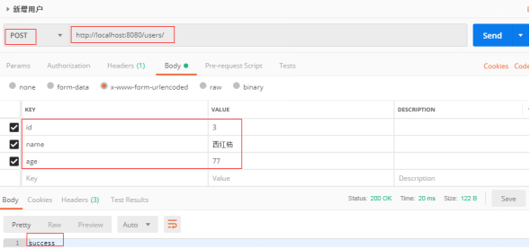
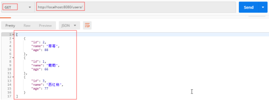
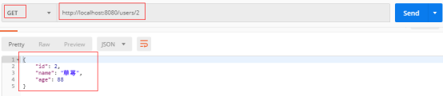
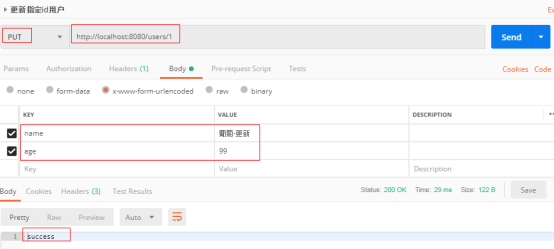
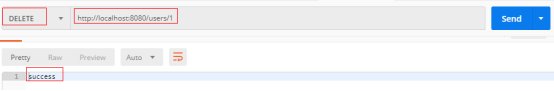

RESTful是一种软件架构风格，一种时尚！
RESTful架构风格规定，数据的元操作，即CRUD(create, read, update和delete,即数据的增删查改)操作，分别对应于HTTP方法：
GET用来获取资源（查询），
POST用来新建资源（添加），
PUT用来更新资源（修改），
DELETE用来删除资源（删除），
这样就统一了数据操作的接口，仅通过HTTP方法，就可以完成对数据的所有增删查改工作
在此我们以用户数据的基本操作来进行接口设计
|
HTTP协议请求方法 |
SpringBoot注解 |
URL |
功能说明 |
|
POST |
@PostMapping |
/users |
创建一个用户 |
|
GET |
@GetMapping |
/users |
查询用户列表 |
|
GET |
@GetMapping |
/users/id |
根据id查询一个用户 |
|
PUT |
@PutMapping |
/users/id |
根据id更新一个用户 |
|
DELETE |
@DeleteMapping |
/users/id |
根据id删除一个用户 |
|
package com.offcn.po; //以下注解在前面我的博客已经做出了详细说明 |
|
package com.offcn.controllerold;
import java.util.ArrayList; import java.util.Collections; import java.util.List;
import org.springframework.web.bind.annotation.DeleteMapping; import org.springframework.web.bind.annotation.GetMapping; import org.springframework.web.bind.annotation.PathVariable; import org.springframework.web.bind.annotation.PostMapping; import org.springframework.web.bind.annotation.PutMapping; import org.springframework.web.bind.annotation.RequestMapping; import org.springframework.web.bind.annotation.RestController;
import com.offcn.po.User;
@RestController @RequestMapping("/users-test") public class UserController { //Collections.synchronizedList线程安全 private List<User> listUser=Collections.synchronizedList(new ArrayList<User>());
/*** * 获取全部用户信息 * @return */ @GetMapping("/") public List<User> getUserList(){ return listUser; }
/*** * 新增用户 * @param user * @return */ @PostMapping("/") public String createUser(User user) { listUser.add(user); return "success"; }
/*** * 获取指定id用户信息 * @param id * @return */ @GetMapping("/{id}") public User getUser(@PathVariable("id")Long id) { for (User user : listUser) { if(user.getId()==id) { return user; } } return null; } /** * 更新指定id用户信息 * @param id * @param user * @return */ @PutMapping("/{id}") public String updateUser(@PathVariable("id") Long id,User user) { for (User user2 : listUser) { if(user2.getId()==id) { user2.setName(user.getName()); user2.setAge(user.getAge()); } } return "success"; }
/*** * 删除指定id用户 * @param id * @return */ @DeleteMapping("/{id}") public String deleteUser(@PathVariable("id") Long id) { listUser.remove(getUser(id)); return "success";
} } |
post http://localhost:8080/users/

get http://localhost:8080/users/

get http://localhost:8080/users/id

put http://localhost:8080/users/id

delete http://localhost:8080/users/id
